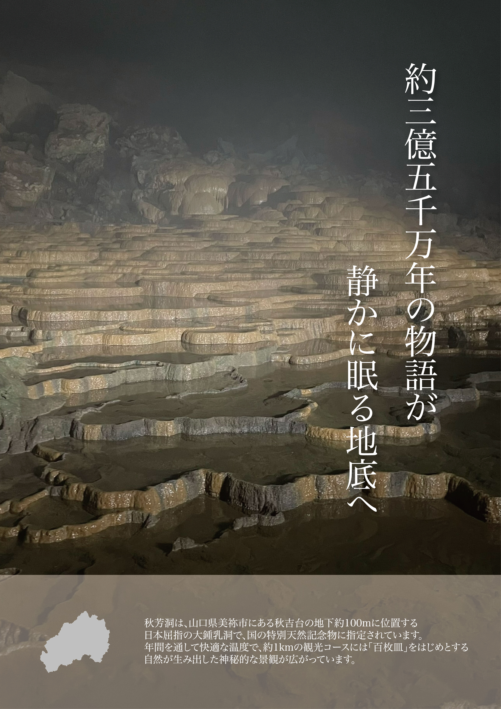

「時間はここで眠る」
第20回山口県広告大賞 ポスターデザイン

Overview
- 課題制作 制作全般
- 制作時期：2025年 10月
- 使用ツール：Illustrator
Concept
本作は、約三億年という人間の感覚をはるかに超えた時間が、今もなお形として存在し続ける場所、秋芳洞を写した作品です。 被写体である百枚皿は、日々の変化や人の営みとは無縁に、気の遠くなるような年月をかけて形成されてきました。 その層状の造形や水の溜まりは、動きが止まったかのように見えながらも、現在もわずかな変化を続けています。 「動かないように見える時間」と向き合うことで、自身の時間感覚が揺さぶられ、日常とは異なるリズムに身を置くきっかけが生まれると考えました。 制作にあたっては、光と陰影、奥行き、地層の重なりといった最小限の要素のみで構成し、自然と立ち止まり、静かに向き合う時間を生むことを意図しています。 「時間はここで眠る」というタイトルには、過去の遺物ではなく、現在も続く時間がこの場所に蓄積されているという意味を込めました。